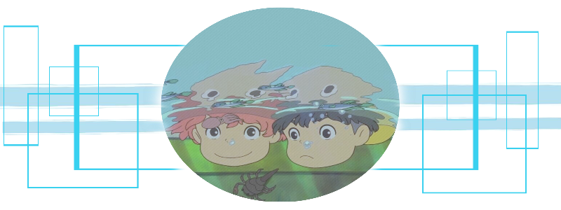

La carne de los animales constituye uno de los pilares básicos de la alimentación humana, por su alto valor nutritivo, debido a su riqueza proteica. Pero también constituye uno de los alimentos más perecederos. Debido a sus características de composición y pH, constituye un medio muy favorable para el desarrollo de la mayor parte de las contaminaciones microbianas. Ver mas...
Es necesario realizar un análisis de alimentos para asegurar que sean aptos para el consumo y para asegurar que cumplen con las características y Composición que se espera de ellos. El conocimiento de la composición de los alimentos, de su contenido en nutrientes, de determinados parámetros que nos informan de su calidad o de la presencia de determinados contaminantes es una información fundamental para la gestión de la calidad y la seguridad de los mismos. Ver mas...

Home